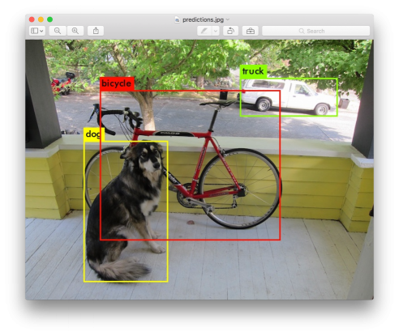

教師あり学習とは？
教師あり学習とは、問題の答えと回答がある場合に使用される学習方法です。
あらかじめ「正解」が明示されている学習データ（教師データ）に適合するようにモデルを構築していく方式を指します。
活用事例をご紹介
出典：YOLO: Real-Time Object Detection
物体の写真と物体の名称のセットを大量に学習させます。そして、学習後のモデルに新しい写真を見せると、その物体が何であるかを検知するようになるという仕組みです。
教師あり学習とは、問題の答えと回答がある場合に使用される学習方法です。
あらかじめ「正解」が明示されている学習データ（教師データ）に適合するようにモデルを構築していく方式を指します。
物体の写真と物体の名称のセットを大量に学習させます。そして、学習後のモデルに新しい写真を見せると、その物体が何であるかを検知するようになるという仕組みです。